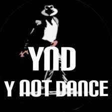

|  | YND - Y NOT DANCEA PASSIONATE SQUADAN ENTERTAINMENT(DANCE) BASED YOUTUBE CHANNEL - ESTABLISHED ON FEBRUARY 28 2021 Running succesfully with 400 + subscribers |
THIS IS OUR CHANNEL'S HOMEPAGE YND - Y NOT DANCE
| Name | experience |
|---|---|
| Arunveda | 14 years of dance experience |
| Arjunveda | 10 years of experience |
| Nakshatra | she is a curious learner with 3+ years of dance |
| videography | ⭐⭐⭐⭐ |
| picture quality | ⭐⭐⭐⭐ |
| screenplay | ⭐⭐⭐⭐ |
| choreography | ⭐⭐⭐⭐⭐ |